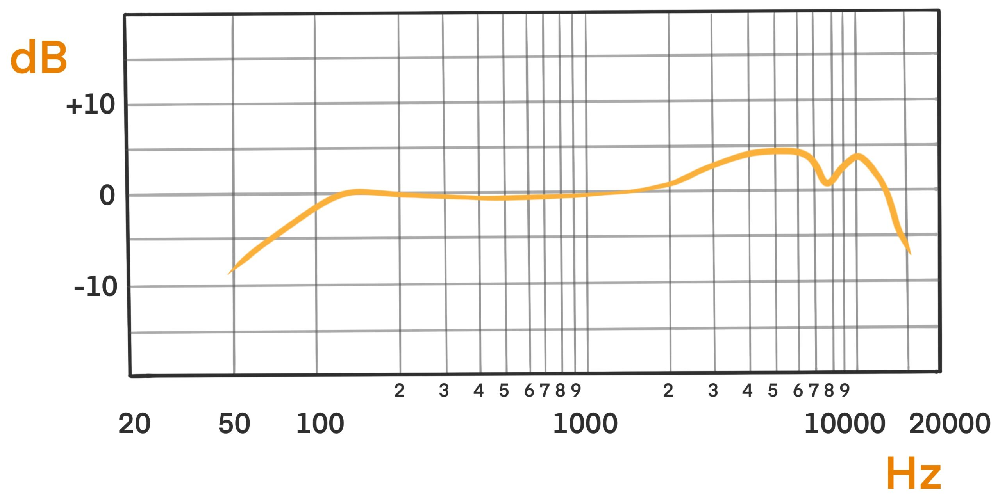
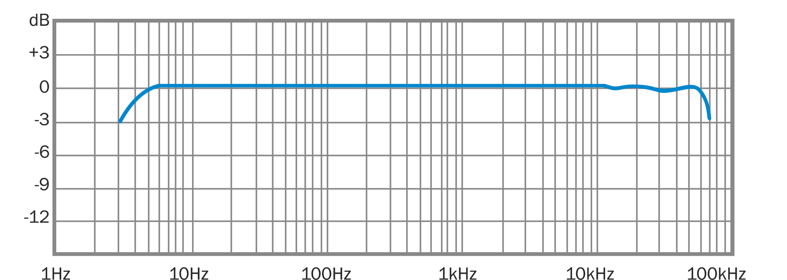
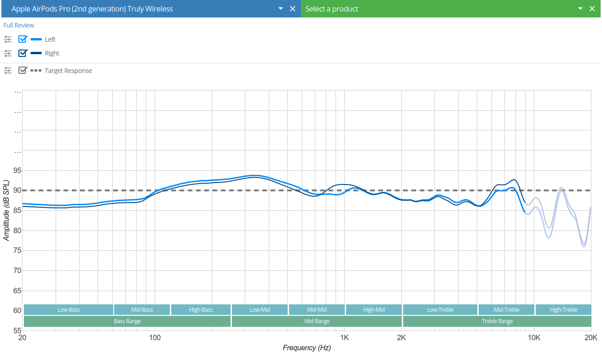
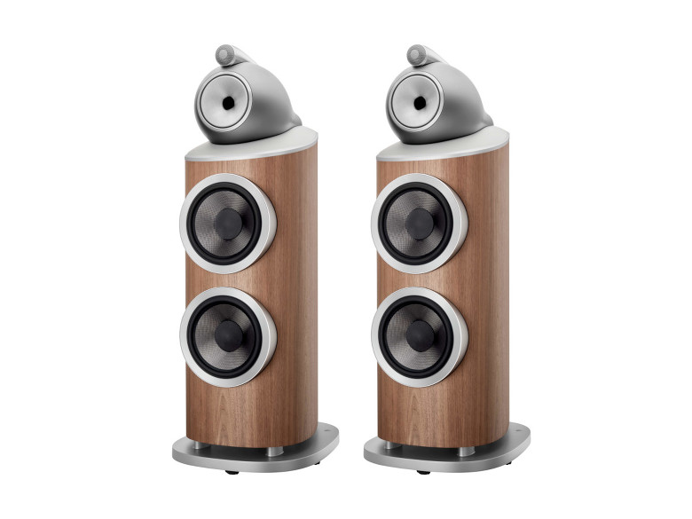
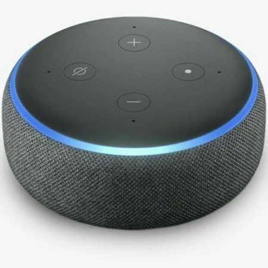
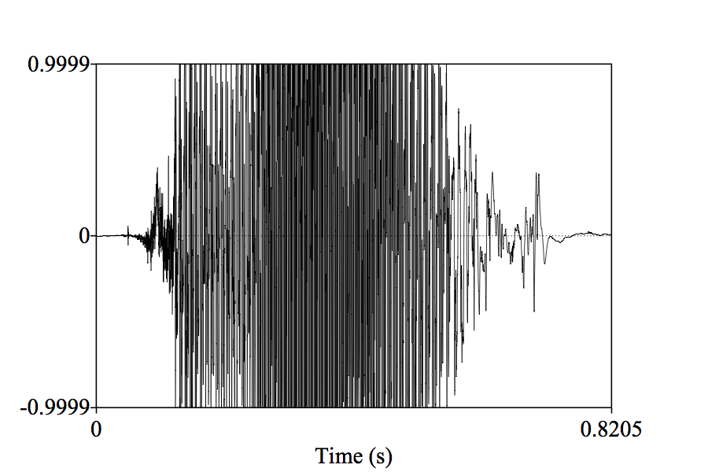
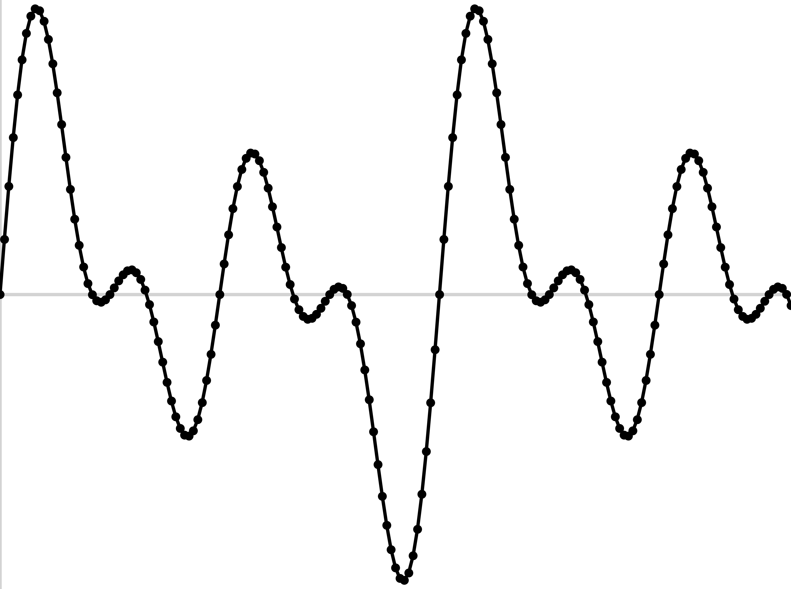
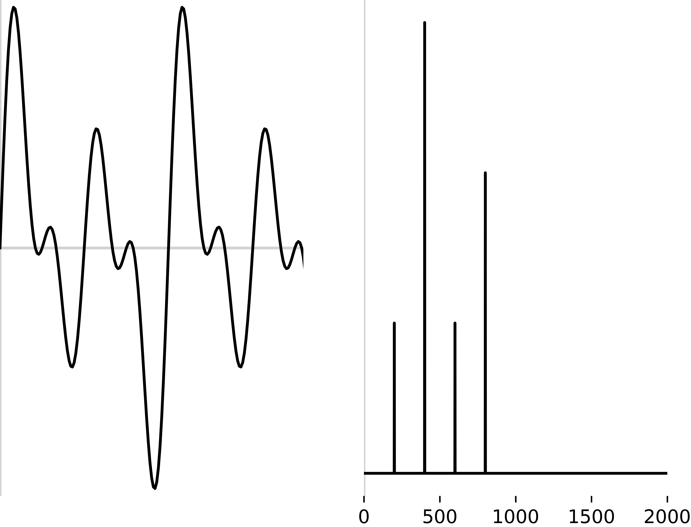
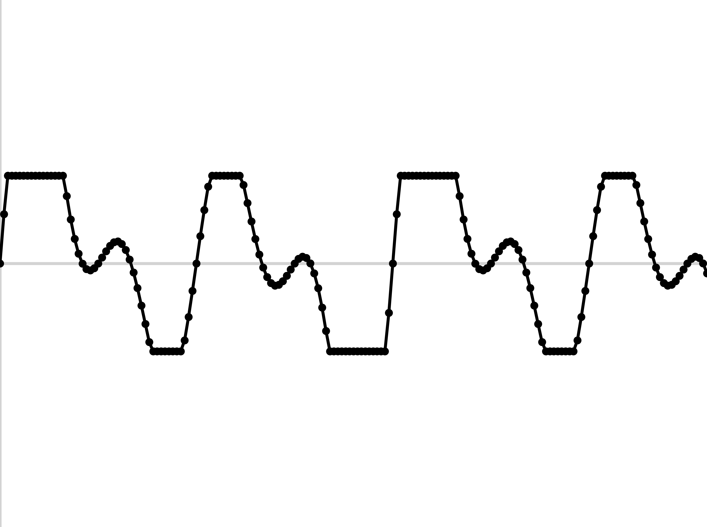

# Filtering and Noise Control ### Will Styler - LIGN 168 --- ### We now know what speech sounds like - We know how to analyze it - We know how to measure it - Even how to modify it - ... but all of that depends on having a good, clean signal --- ### The World is Noisy - Room echo and feedback - Typing and mouse clicks - Background clatter - Wind Noise - **Speech processes want to send the voice, not the noise!** --- ### People are really good at ignoring noise - How? --- ### Filtering out noise is very easy - Set the signal to 0 - This will immediately remove all noise - ... but it's not going to preserve the signal particularly well - So, the question is **how do we remove as much noise as we can without harming the signal we care about?** - We're going to talk about the 'signal', the 'noise', the 'input', and the 'output' --- ### How do we do this computationally? - Well, that's... --- ### Today's Plan - Basic Filter Types - Filtering without Digital Signal Processing - Fancy Filtering - Avoiding the need for filtering - The Scourge of Clipping --- ## Basic Filter Types --- ### Note: This is different from 'Source Filter' filtering - Here, we're talking signal processing - The filters are generally mathematical, rather than resonance-based - Generally, we're doing complete removal, not enhancement and damping --- ### There are four main kinds of filters we'll describe - **High Pass** - "Let frequencies higher than this pass" - **Low Pass** - "Let frequencies lower than this pass" - **Band Pass** - "Let frequencies in this band pass" - **Band Stop** (also 'Band Reject' and 'Notch') - "Let only frequencies outside this band pass" --- <img class="r-stretch" src="phonmedia/filtering.jpg"> --- ### Filters aren't perfect - They always have a 'cutoff' and a 'slope' - This can be called 'rejection rate', but you'll also hear 'roll-off' - The slope dictates how quickly sounds outside the cutoff are attenuated - **There's no such thing as a perfect filter in the frequency domain** - Where the slope is vertical --- ### What kind of filter would you use to... - Remove an annoying refrigerator noise at 350Hz - Get rid of all the information above 10kHz - Isolate the signal from 0 to 3000Hz - Remove a 3Hz fan noise - Extract 200 Hz around F1 --- ### There's a *lot* to filter theory - Whole dissertations are made in improving the nature of computational noise filters - There are interesting artifacts ('ringing') which pop up when filters are poorly implemented, or when you're trying to use edges that are too sharp - You can combine multiple filters together to get fancier - "Pass 0-100Hz, and two 1000Hz bands centered around 2k and 4k" - Implementing these with digital logic is *non-trivial* - **But for now, know high pass, low pass, band pass, and band stop** and what they mean --- ### ... Do we need computers to do this? --- ## Filtering without Digital Signal Processing --- ### Filters can be analog or digital - You can use analog electronic circuits to do filtering - Example: A capacitor and resistor, combined, allow high/low pass filtering - Capacitors allow higher frequencies through, and block lower frequencies - The exact nature of the filtering depends on the capacitor - A signal passed through this kind of capacitor is high-passed - You can also low-pass by effectively inverting this, and giving the lower frequencies a separate path - This means that you don't need computers to filter sound - ... and analog filters work in real time, without needing extra power --- ### Filtering can be accidental, too! - No acoustical space or device is perfect - Rooms filter sound - Absorptive materials remove some frequencies and not otherse - ... but most relevant here... --- ### Speakers and Microphones do filtering! - No microphone (or speaker) is perfect and responds *linearly* throughout the entire frequency spectrum - Cheap, tiny, or highly durable microphones and speakers tend to be worse - Laptop microphones are often very bad, and introduce a lot of non-linearity --- ### Shure SM58 <img class="r-stretch" src="phonmedia/mic_sm58_pic.jpg"> --- ### Shure SM58 Frequency Response  --- ### Earthworks M50 <img class="r-stretch" src="phonmedia/mic_ewm50_pic.jpg"> --- ### Earthworks M50 Frequency Response  --- ### Apple Airpods Pro Speaker Frequency Response  --- ### Bowers and Wilkins 801 D4  --- ### Bowers and Wilkins 801 D4 Frequency Response <img class="r-stretch" src="phonmedia/speaker_bw801D4_response.jpg"> --- ### The Human Ear - The ear canal and outer ear (pinna) filter the ear depending on sound localization - The Pinna amplifies sounds centered around 3000Hz --- ### The Important Lesson: Know your filters! - You will (almost) never control every filter in the chain from human to human - Changing microphones on the input may impact the performance of your system - Garbage in, Garbage Out - Garbage Out, Garbage Out too! --- ## Fancy Filtering and 'Noise Reduction' --- ### We can do better than pass and stop filters! - With modern digital signal processing, we can post-process sound in smarter ways - We can work in both the *spectral* domain and the *temporal* domain - Not just isolating frequencies to block, but patterns of noise to block --- ### Spectral Subtraction - "I know what the spectral shape of the noise is, so I'll just subtract that from the input!" - This requires you to *estimate* the spectral shape of the noise accurately - LPC! - It also requires you to *designate* which noise you're dealing with right now - ... or to classify which noise is happening based on the input - This is great if you have pre-determined noise types you know you're going to face --- ### Spectral Subtraction <img class="r-stretch" src="phonmedia/spectralsubtraction.png"> --- ### Wiener Filtering - "I'm going to estimate the spectral nature of the noise **and** the signal, and then create a filter which minimizes the difference between signal and estimate" - Uses statistical methods (mean squared error) to generate an optimal set of filter coefficients which makes the signal look most like what you think it should - It assumes the noise is invariant - Although you can recalculate periodically, at computational cost - It requires some knowledge of the desired signal --- ### Time-Domain Adaptive Filtering - Sometimes, noise varies predictibly in the *time domain* - "Well, I know the signal is unpredictable, but this noise seems to be on a 5 Hz modulation cycle. Let's design a quick filter which removes the type of noise that cycles at 5 Hz" - This allows us to better estimate the nature of the noise and filter it out - This presumes periodicity of modulation of the noise source! --- ### Deep Neural Network Filtering - "Let's train a deep neural network model on a ton of clean speech, so it knows what the signal looks like, and then have it reconstruct the speech signal without the noise" - This is a *reconstructive process*, so it's *adding things to the input which weren't originally present!* - "Synthesize what this speech probably is without the noise" - Different models are required for different kinds of signals --- ### An awkward analogy <img class="r-stretch" src="dalle/hidingkitten.jpg"> --- ### Deep Neural Network filtering is what Discord and others use - 'Krisp' is using 'AI', which I presume means neural models - Zoom is also using neural networks (possibly Krisp) - You can often "tune" the degree of noise cancellation - "How much of the input are we mixing into the output of the NN" --- ### Difficulties with Fancy Filtering - It's slower and computationally more expensive - This makes it harder on tiny or low-power devices - They're often trained on *specific types of noise* - 'Atypical Noise' may be filtered less well - The latency and time-to-start of filtration is harder to control - When should we apply filtering if the noise and signal overlap? - The amount of gain reduction - Particularly when there's valuable signal in similar frequencies --- ### Difficulties with Fancy Filtering (Continued) - What bias are you introducing into your signal processing? - This can adversely affect classes of phones found in languages outside of the training data - "That sound isn't found in the language I learned about, so it's noise!" - Some meaningful signal may not be speech - Neural Network filtering is expensive, and is not guaranteed to reconstruct exactly what was said - **All filtering is imperfect, and will either leave noise, or take signal, or both!** - This means... --- ### The best filtering is no filtering! - So how can we remove as much noise as we can before we get started? --- ## Avoiding the need to filter --- ### Microphone Placement - Put the microphone close to the thing which is producing the signal you need - Try to put barriers between noise sources and the microphone --- ### Microphone Directionality - Microphones have spatial patterns of response - "From which direction(s) does the microphone most readily pick up sound?" - Choose the right response pattern for the job! --- ### Polarity Patterns <img class="r-stretch" src="phonmedia/mic_polaritypatterns.jpg"> --- ### Shure SM58 Polar Response <img class="r-stretch" src="phonmedia/mic_sm58_polarity.png"> --- ### Earthworks M50 Polar Response <img class="r-stretch" src="phonmedia/mic_ewm50_polarity.jpg"> --- ### Microphone Arrays - Capture input from multiple microphones pointing towards and away from the signal - Input that comes in on all mics is probably noise - Input that comes in strongest on the signal mic probably signal - **Now use one of the other filtering methods with this knowledge!** --- ### Beamforming - Arrange omnidirectional microphones in a known, geometric pattern --- ### A Beamforming Array <img class="r-stretch" src="phonmedia/mic_beamforming_array.jpg"> --- ### A less impressive Beamforming array  --- ### Beamforming Arrange omnidirectional microphones in a known, geometric pattern - Each microphone picks up all the sounds in the room - Signals from different directions arrive at different times to different microphones - ... and at slightly different phases - Signals are differentially weighted (via *wild* math) to effectively target a particular direction containing desirable signal - This direction can be static or adaptive - The summed output is now highly directional, and minimizes noise sources from other directions --- ### All of these methods attempt to optimize the signal-to-noise ratio at the input - ... and they can combine with all the other methods we've discussed --- ### There's one thing that none of these methods can save you from --- ## Clipping - <img class="r-stretch" src="img/clippy.jpg"> --- ### Clipping is when the amplitude of your signal is greater than you can sample - The signal's amplitude is greater than your capturable *dynamic range* - You lose the 'tops' of the waveform and sample a straight line of samples at the top of your --- ### Clipping of a speech signal  --- ### Clipping is *really, really bad* - ... because the signal is captured *exactly as it was measured* ---  ---  --- <img class="r-stretch" src="diagrams/sampling_clip_cutoff.png"> ---  --- --- <img class="r-stretch" src="diagrams/sampling_clip_clipped_fft.png"> --- ### Clipping introduces *massive spectral garbage* - Anything in the spectral or cepstral domain is going to go wild - There's no way to filter your way out of this *because the input sucks* --- ### Clipping is also bad for output - It also is very bad for speakers to play back clipped sound - If your amplifier can't create the full dynamic range for playback, you'll get clipping too --- --- ### Above all else, do not clip! - Because then you're up a creek without a signal --- ### Wrapping up - We want to remove as much noise as possible without removing signal - Many things filter sound, even without fancy digital methods - We can be very fancy about filtering, if we can spare some compute power - Life is better if you can optimize the input signal before you have to start filtering - Nothing will save you if you're clipping --- ### Next time - So, what does sound look like sitting on a computer's disk? - ... and do the files really need to be that big? --- <huge>Thank you!</huge>